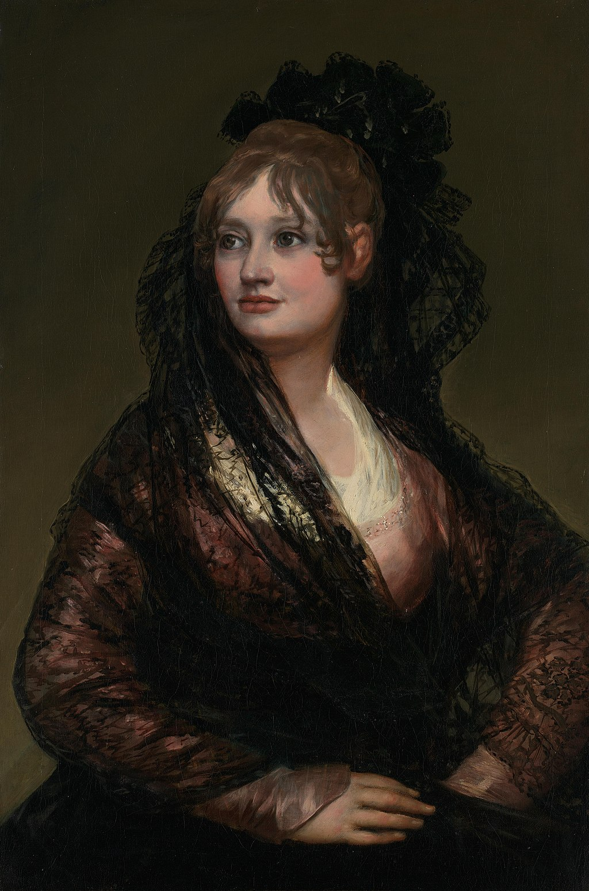

<head>
<meta charset="UTF-8" />
<meta name="keywords" content="drawing, painting" />
<meta name="description" content="drawings by Sunjy" />
<title>Sunjy</title>
<link rel="shortcut icon" type="image/x-icon" href="../../mImages/mCommon/favicon.ico" media="screen" />
<link rel="stylesheet" type="text/css" href="../../mCsses/mCommon/mCssA.css" />
<link rel="stylesheet" type="text/css" href="../../mCsses/mCommon/mCssB.css" />
<link rel="stylesheet" type="text/css" href="../../mCsses/mCommon/mCssC.css" />
<link rel="stylesheet" type="text/css" href="../../mCsses/mCommon/mCssD.css" />
<link rel="stylesheet" type="text/css" href="../../mCsses/mContent/mCssA.css" />
<link rel="stylesheet" type="text/css" href="../../mCsses/mContent/mCssB.css" />
<link rel="stylesheet" type="text/css" href="../../mCsses/mContent/mCssC.css" />
<link rel="stylesheet" type="text/css" href="../../mCsses/mContent/mCssD.css" />
</head>
<script type="text/javascript" src="../../mScripts/mContent/mContentAA.js" /></script>
<script type="text/javascript" src="../../mScripts/mContent/mContentAB.js" /></script>
<script type="text/javascript" src="../../mScripts/mContent/mContentAC.js" /></script>
<script type="text/javascript" src="../../mScripts/mContent/mContentAD.js" /></script>
<script type="text/javascript"></script> 
<script type="text/javascript">
document.write('<div class="mImgAbsolute"></div>');
/*
document.write('<p class="mFontSizeBColor" />From a white paper...</p>');
document.write('<table class="center"><tr><td>');
document.write('');
document.write('</td></tr></table>');
*/
</script>


<script type="text/javascript">
document.write('<p class="mFontSizeBColor" />Portrait of Doña Isabel de Porcel</p>');
document.write('<p class="mFontSizeSColor" />“Portrait of Doña Isabel de Porcel” by Francisco Goya depicts Isabel Lobo Velasco de Porcel, who was born at Ronda around 1780. The half-length portrait depicts a young woman dressed in typical Spanish attire, a white shirt, and a black mantilla.<br><br>The richness of the textiles and her appearance give the picture an aristocratic elegance.<br><br>The decisive gesture in which the hands are on the hips and the elbows are bowed outward, and her confidence stands out.<br><br>Her eyes and hair are light browns, her skin is pale, and her body is slightly turned, while her head gives balance by being turned to the opposite side.<br><br>Goya has achieved realism and deepness without adding any other objects to the composition. A unique aspect of this painting is that the woman is looking towards the left side of the viewer and not directly at the artist.<br><br>Most of Goya’s paintings have the subject looking at the viewer.<br><br>Isabel’s husband was 25 years older than her, and they met when she was 20 years old. The painting is said to have been a gift from the Goya in return for the Porcel family’s hospitality.<br><br>A Goya portrait of her husband was lost in a fire during a riot in 1953.<br><br>Mantilla<br><br>A mantilla is a traditional Spanish lace or silk veil worn over the head and shoulders, often over a high comb called a ‘peineta,’ popular with women in Spain. The shape, design, and use are different from an ordinary veil.<br><br>The lightweight ornamental mantilla came into use in the warmer regions of Spain towards the end of the 16th century. The ones made of lace became popular with women in the 17th and 18th centuries.<br><br>They were depicted and popularized in portraits by Velázquez and Goya. By 1900 the use of the mantilla became limited mainly to formal occasions such as bullfights, Holy Week, and weddings.<br></p>');
document.write('<table class="center" /><tr><td>');
document.write('<br>The richness of the textiles and her appearance give the picture an aristocratic elegance.<br><br>The decisive gesture in which the hands are on the hips and the elbows are bowed outward, and her confidence stands out.<br><br>Her eyes and hair are light browns, her skin is pale, and her body is slightly turned, while her head gives balance by being turned to the opposite side.<br><br>Goya has achieved realism and deepness without adding any other objects to the composition. A unique aspect of this painting is that the woman is looking towards the left side of the viewer and not directly at the artist.<br><br>Most of Goya’s paintings have the subject looking at the viewer.<br><br>Isabel’s husband was 25 years older than her, and they met when she was 20 years old. The painting is said to have been a gift from the Goya in return for the Porcel family’s hospitality.<br><br>A Goya portrait of her husband was lost in a fire during a riot in 1953.<br><br>Mantilla<br><br>A mantilla is a traditional Spanish lace or silk veil worn over the head and shoulders, often over a high comb called a ‘peineta,’ popular with women in Spain. The shape, design, and use are different from an ordinary veil.<br><br>The lightweight ornamental mantilla came into use in the warmer regions of Spain towards the end of the 16th century. The ones made of lace became popular with women in the 17th and 18th centuries.<br><br>They were depicted and popularized in portraits by Velázquez and Goya. By 1900 the use of the mantilla became limited mainly to formal occasions such as bullfights, Holy Week, and weddings.<br>" />');
document.write('</td></tr></table>');
</script>


